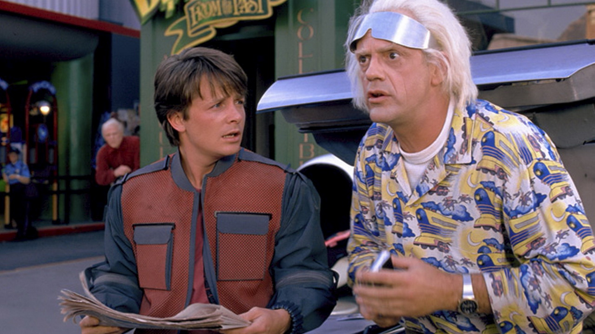
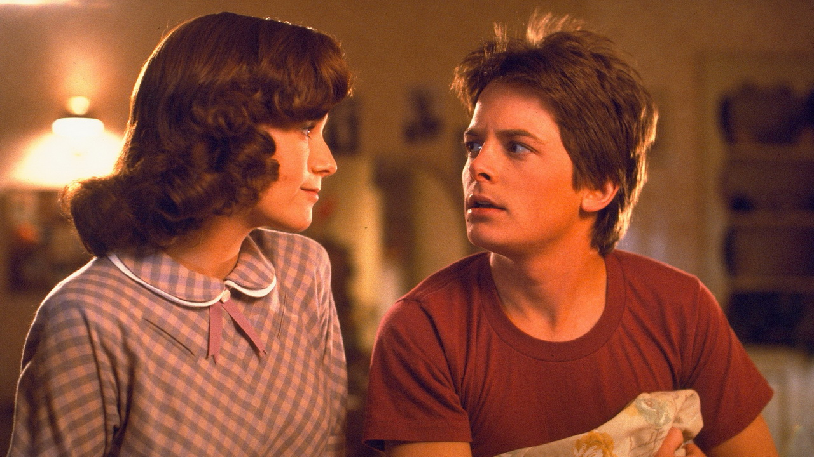
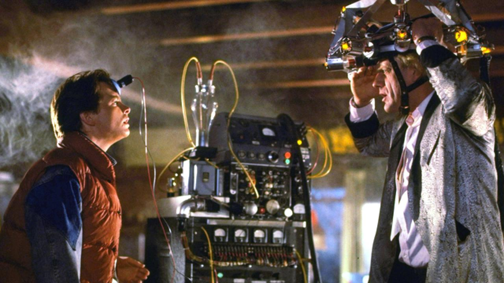
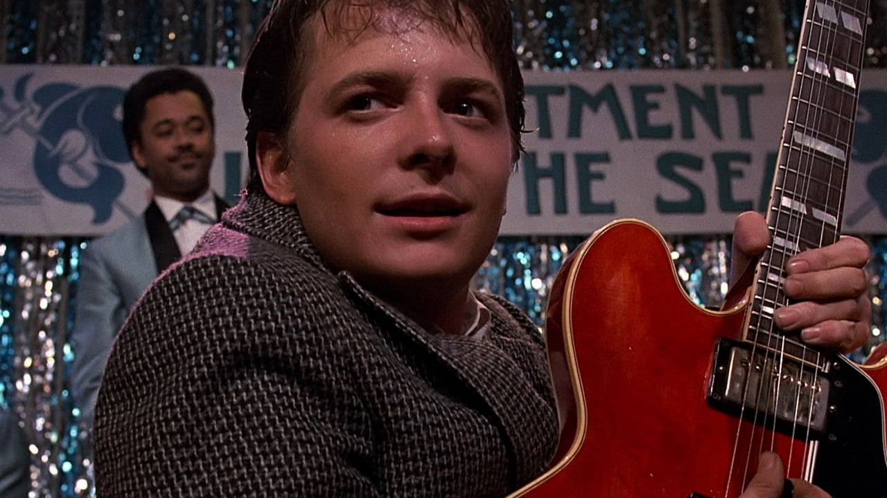

Назад в будущее
Научно-фантастический фильм в трёх частях о путешествиях во времени, описывающий альтернативные реальности маленького американского городка Хилл-Вэлли и нескольких проживающих там семей, поставленный режиссёром Робертом Земекисом и спродюсированный Стивеном Спилбергом, Фрэнком Маршаллом и Кэтлин Кеннеди. Первый фильм вышел в 1985 году
   По сюжету доктор Эмметт Браун 30 лет изобретал машину времени и, наконец, в 1985 году он закончил работу над ней, установив энергетический флюксуатор (в других переводах — потоковый накопитель и поточный конденсатор) в автомобиле DeLorean DMC-12.
Сначала он демонстрирует машину своему юному другу, старшекласснику Марти Макфлаю, но именно тогда на них нападают охотящиеся за «Доком» (доктором) террористы. Дока убивают, а Марти спасается на машине времени и попадает в 1955 год. Возвращение крайне проблематично, потому что для путешествия во времени нужен плутоний. Кроме того, из-за нелепой случайности Марти мешает встрече собственных родителей. Этим он ставит под угрозу своё существование, и находит ещё молодого Эмметта Брауна, надеясь с его помощью решить эти две проблемы, а также спасти Дока в будущем, предупредив об опасности. Марти необходимо успеть влюбить друг в друга своих родителей, противостоять негодяю Биффу Таннену и вернуться в своё время.
Продолжение, «Назад в будущее 2», вышло в 1989 году. Успешно справившись со всеми трудностями, Марти возвращается домой, в 1985 год. Но неожиданное появление Дока заставляет юношу рассказать его подружке Дженнифер о существовании машины времени — героям приходится отправиться в 2015 год, чтобы спасти своих будущих детей от тюрьмы. Между тем старик Бифф Таннен узнаёт о существовании машины времени, угоняет её и изменяет собственную судьбу, превращая себя в одного из самых богатых людей США. Остальной же мир становится настоящим кошмаром, в котором отец Марти убит, а Док признан сумасшедшим.
Док и Марти отправляются в прошлое, чтобы помешать Биффу из будущего изменить настоящее. По странному стечению обстоятельств, вернуться им предстоит всё в тот же 1955 год. После удачного исхода их миссии в машину времени с находящимся в ней Доком случайно ударяет молния, и Док оказывается в 1885 году.
В заключительной части, «Назад в будущее 3», выпущенной в 1990 году, оставшийся в 1955 году Марти Макфлай ищет машину времени, оставленную Доком в 1885 году. Случайно он узнаёт, что в этом году Док был убит бандитом Бьюффордом Танненом за долг в 80 долларов. Марти отправляется в прошлое — на Дикий Запад, чтобы спасти своего друга. Но пожилой учёный влюбляется в учительницу Клару Клейтон, а возвращение домой станет невыполнимым заданием для двух путешественников во времени.
После нападения индейцев DeLorean остаётся без топлива, которое ещё даже не изобрели. Однако Марти и Док решили придать ускорение DeLorean, поставив машину на рельсы впереди несущегося к пропасти локомотива.